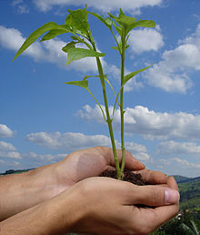
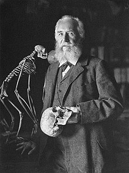

¿Qué es la ecologia?
La ecología es la rama de la biología que estudia las relaciones de los diferentes seres vivos entre sí y su relación con el entorno. Estudia cómo estas interacciones entre los organismos y su ambiente afectan a propiedades como la distribución o la abundancia. Los ecosistemas están compuestos de partes que interactúan dinámicamente entre ellas junto con los organismos, las comunidades que integran, y también los componentes no vivos de su entorno.

Los procesos del ecosistema, como la producción primaria, la pedogénesis, el ciclo de nutrientes, y las diversas actividades de construcción del hábitat, regulan el flujo de energía y materia a través de un entorno. La visión integradora de la ecología plantea el estudio científico de los procesos que influyen en la distribución y abundancia de los organismos, así como las interacciones entre los organismos y la transformación de los flujos de energía. La ecología es un campo interdisciplinario que incluye a la biología y las ciencias de la Tierra.
El término "ecología" fue acuñado en 1869 por Ernst Haeckel a partir de las palabras griegas "oikos" (casa, vivienda, hogar) y "logos" (estudio o tratado), lo que significa "el estudio del hogar". La ecología evolucionó desde la historia natural de los antiguos filósofos griegos y se estableció en el siglo XIX como una ciencia más rigurosa, estrechamente relacionada con la biología evolutiva, la genética y la etología.

Los ecólogos estudian las interacciones de los seres vivos con su hábitat, incluyendo factores abióticos y bióticos. La ecología se ocupa del nivel superior de organización, como poblaciones, comunidades, ecosistemas y biosfera, utilizando herramientas de otras ramas de la ciencia. Los ecólogos tratan de explicar los procesos de la vida, el movimiento de materiales y energía a través de las comunidades vivas, la sucesión ecológica de los ecosistemas, y la abundancia y distribución de los organismos y la biodiversidad en el contexto del medio ambiente.
La ecología tiene numerosas aplicaciones prácticas en biología de la conservación, manejo de recursos naturales, planificación urbana, salud comunitaria, economía y más. Los ecosistemas sostienen funciones que sustentan la vida y producen el capital natural, siendo objeto de investigación que implica un mayor uso de herramientas matemáticas y modelos.